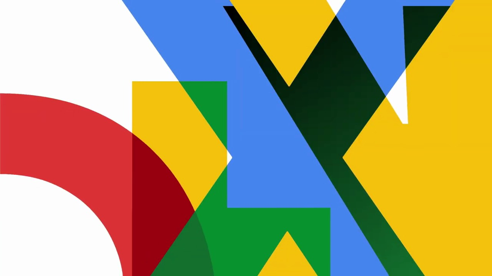
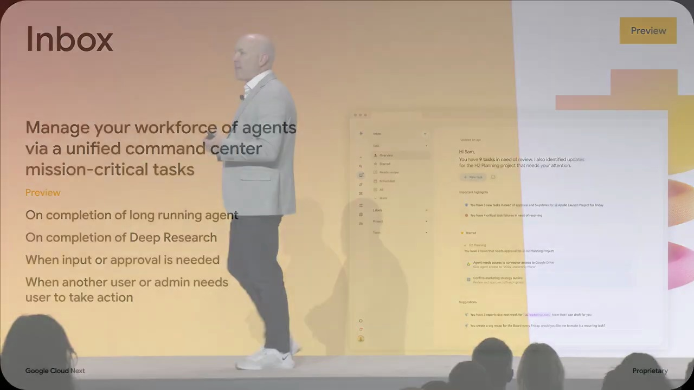
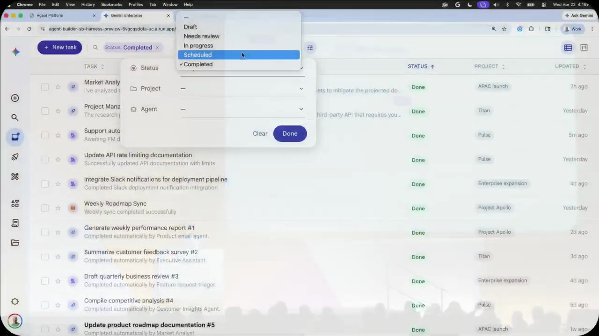
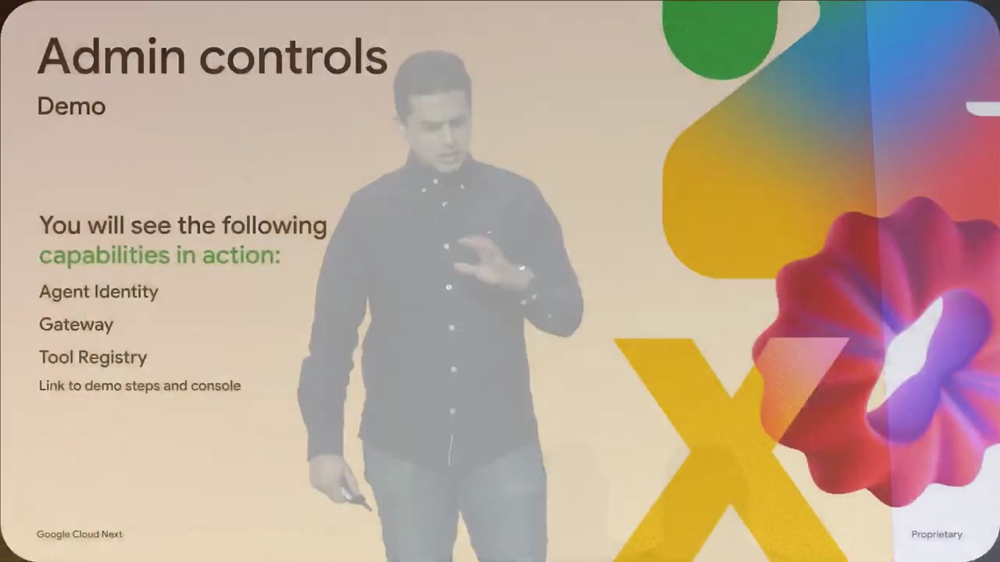
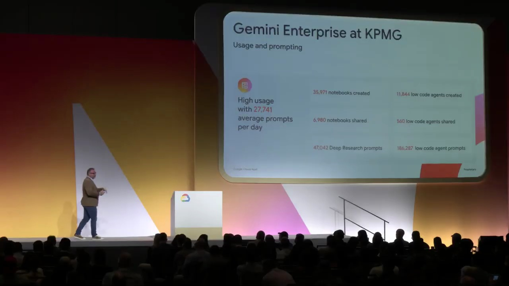
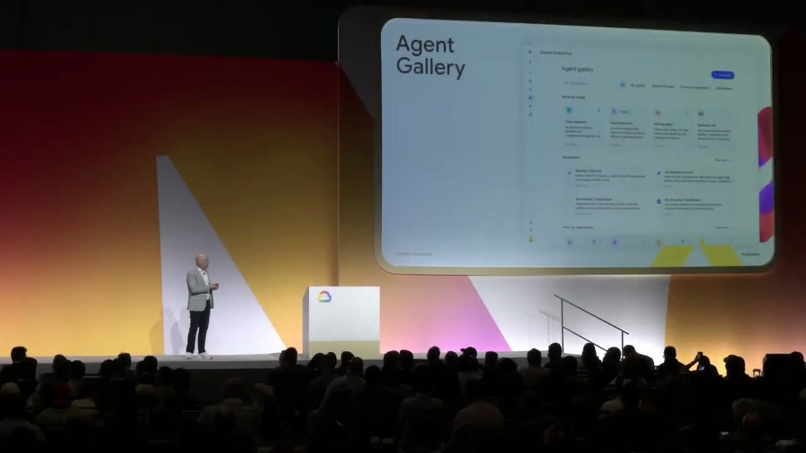

Key Moments






Summary & Script
What's new with Gemini Enterprise app
Source: https://www.youtube.com/watch?v=Tc3IiGNmXHc
Video ID: Tc3IiGNmXHc
Overview
The session at Google‑Next unveiled the latest Gemini Enterprise enhancements, centering on the new Gemini Enterprise Agent platform and a suite of application‑layer features that let every employee create, run, and manage AI agents without code. Jamie Deggeer (Google Cloud AI) and panelists from KPMG and Signal Iduna demonstrated how large organizations are already adopting the technology to automate complex workflows, improve self‑service, and embed AI directly into everyday tools such as Workspace and Slack.
New Features & Announcements
Gemini Enterprise Agent platform — A cloud‑first, enterprise‑grade stack that bundles Vertex AI models (including Anthropic Claude and open‑source options), data‑grounding tools, and new governance services (agent gateway, identity service, registry, skills registry).
Timeline: announced today
Availability: General AvailabilityNo‑code Agent Designer — Drag‑and‑drop interface for building agents, setting policy guardrails, and combining long‑running “sandbox” agents with deterministic, policy‑controlled outcomes.
Timeline: today’s releaseInbox — Central view for each user’s active agents, notifications, and response handling across mobile, Slack, email, etc.
Timeline: today’s releaseSkills & Canvas – Personalizable “skills” that encapsulate repeatable procedures; Canvas lets users generate documents, presentations, and other assets directly from agent outputs.
Timeline: today’s releaseProjects – Shared workspaces with persistent context, enabling humans and digital agents to collaborate on long‑running tasks together.
Timeline: today’s release
Topics Covered
- Enterprise adoption – Overview of early customers (Anaplan, Macquarie Bank) and usage statistics (80 % employee adoption at Anaplan, 40 % self‑service lift at Macquarie).
- Agent platform architecture – Integration of Vertex AI models, grounding connectors, and governance components that make the system cloud‑first and secure.
- No‑code vs. full‑code agents – Explanation of “long‑running” sandbox agents that can write code, use browsers, and persist state, contrasted with no‑code guardrails for policy compliance.
- User experience shift – Move from ad‑hoc chatbot interactions to background agents that act autonomously and surface results only when needed.
- Demo: loan‑processing workflow – Creation of a full‑code loan supervisor agent, wrapping it with a no‑code scheduled agent, handling human‑review routing, generating HTML reports, and turning results into a slide deck via Canvas.
- Cross‑surface integration – Agents callable from Workspace, Slack, and other third‑party clients, with mention‑based triggers and real‑time responses.
Key Takeaways
- Gemini Enterprise now offers a full platform (Agent platform) to build, govern, and scale AI agents across the organization.
- No‑code Designer lets business users set policy guardrails without writing code, while sandbox agents handle complex, multi‑step tasks securely in the cloud.
- The new Inbox, Skills, Canvas, and Projects features provide unified interaction points and collaborative spaces for human‑agent teamwork.
- Real‑world deployments are already delivering measurable productivity gains (e.g., 40 % increase in self‑service at a major bank).
- Integration with over 50 first‑party connectors and extensible MCP‑server connectors ensures agents can act on any enterprise data source.
- Governance components (agent gateway, identity service, registries) make the solution enterprise‑grade and ready for large‑scale rollout.
Notable Quotes
- “Gemini Enterprise is the front door to AI in the workplace… it gives every employee the ability to leverage AI and agents connected to all of your enterprise data.”
- “We’re shifting from a world where employees chat with an assistant to a world where a team of agents works in the background and only comes to you when it needs input.”
- “With the no‑code agent designer you can combine long‑running agents with guardrails and policies so you get deterministic outcomes for different teams and scenarios.”
Podcast Script
JORDAN: Hey everyone, welcome back to the podcast! I’m Jordan, and with me as always is Mike. Today we’re unpacking Google’s fresh Gemini Enterprise announcements from their recent Next conference.
MIKE: Thanks, Jordan! I’m excited—this sounds like a big leap for AI in the workplace. Let’s dive into what Gemini Enterprise actually is and why it matters for every employee.
JORDAN: At its core, Gemini Enterprise is a cloud‑first, enterprise‑grade front door to AI. It lets every staff member tap into AI agents that can pull from the company’s data and even trigger actions in internal systems.
MIKE: So it’s not just a chat bot, right? It sounds like a whole team of agents working behind the scenes, and you can even build your own with a no‑code designer. That could change how we get work done.
JORDAN: Exactly. The new Gemini Enterprise Agent platform bundles Vertex AI models—think Gemini, Anthropic Claude, plus open‑source options—along with tools for data grounding, system connectors, and a suite of governance features like an agent gateway and identity service.
MIKE: Governance is key for large firms. I’m curious how companies are actually using this. I heard KPMG and a German insurer were on the panel. What are they doing with these agents?
JORDAN: KPMG’s digital innovation lead talked about using agents to streamline audit workflows, while Signal Iduna is deploying them for claims processing and fraud detection. Both report faster response times and higher employee adoption rates.
MIKE: Adoption stats are impressive—Anaplan says 80 % of its workforce is already building no‑code agents. That suggests the barrier to entry is really low. How does the platform keep that scalable?
JORDAN: The platform introduces a registry for agents, skills, and tools, plus a centralized inbox where each employee can see background agent activity, set notification preferences, and interact via Slack, Workspace, or mobile apps. It’s essentially a single pane of glass for all AI work.
MIKE: That inbox idea flips the script: instead of us constantly prompting an assistant, agents run autonomously and only ping us when they need input. It feels like moving from a chat interface to a true digital coworker.
JORDAN: Right, and the no‑code agent designer adds guardrails—policy‑level controls that ensure agents act within compliance, even when they’re running long‑running tasks in secure sandboxes. That’s how you get deterministic outcomes at scale.
MIKE: Speaking of long‑running tasks, the demo showed a loan‑processing agent that could pull applications, run risk checks, and even open a ServiceNow ticket if human review was needed. That’s a full end‑to‑end workflow without writing a line of code.
JORDAN: And the output wasn’t just data; the platform can generate HTML reports, create slide decks via Canvas, and push them straight into Google Workspace or Microsoft 365. So the AI finishes the analysis and prepares the presentation for you.
MIKE: It’s like having a personal analyst that not only does the heavy lifting but also formats the results for the boardroom. I can see this being a game‑changer for knowledge workers across industries.
JORDAN: To sum up, Gemini Enterprise gives enterprises a unified, secure, and governable AI layer—agents that can be built with code or no‑code, run autonomously, and integrate into the tools employees already use.
MIKE: And the real impact? Faster processes, higher adoption, and the ability to embed AI deep into everyday workflows without sacrificing control or compliance. Thanks for breaking that down, Jordan.
JORDAN: Thanks, Mike. That’s it for today’s episode. If you’re curious about trying out Gemini Enterprise, check out the Google Cloud site for more details.
MIKE: We’ll be back soon with more deep dives into emerging tech. Until then, stay curious and keep experimenting!